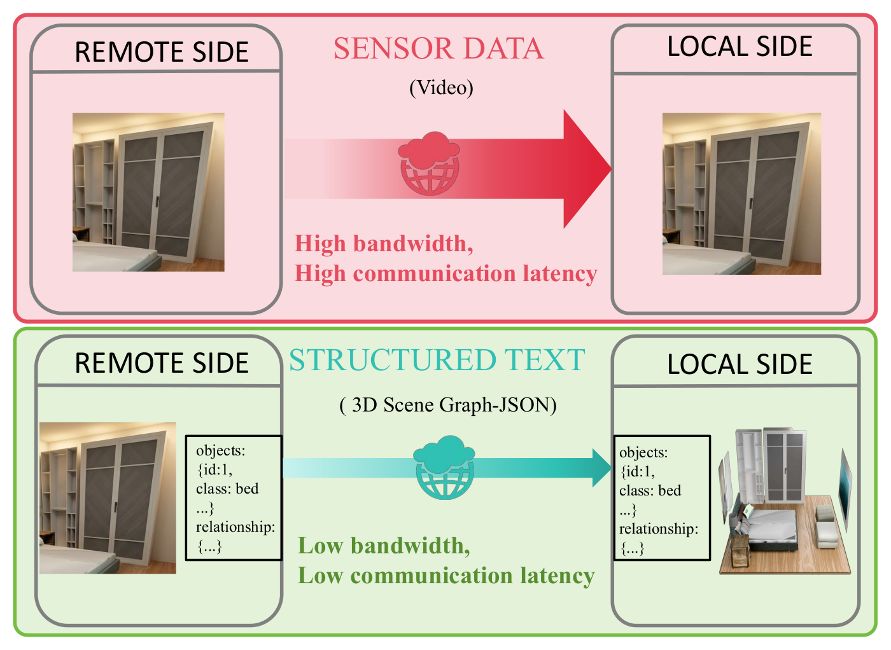
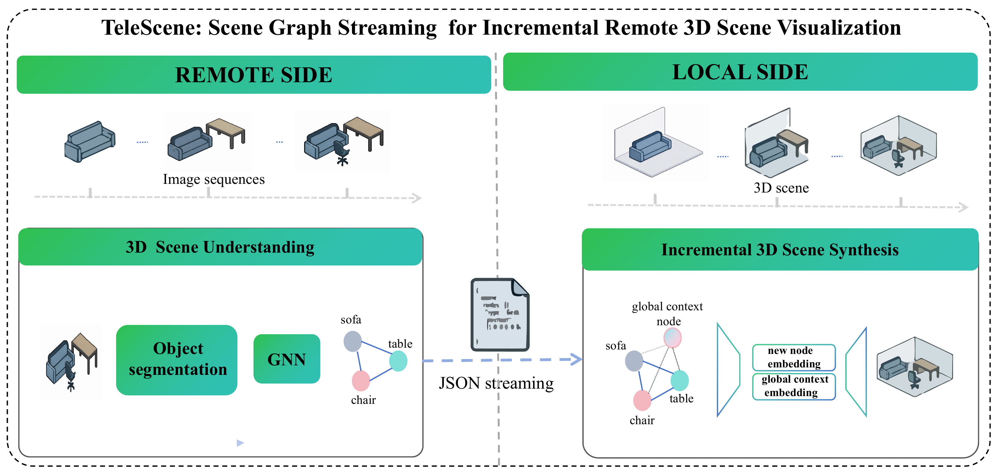
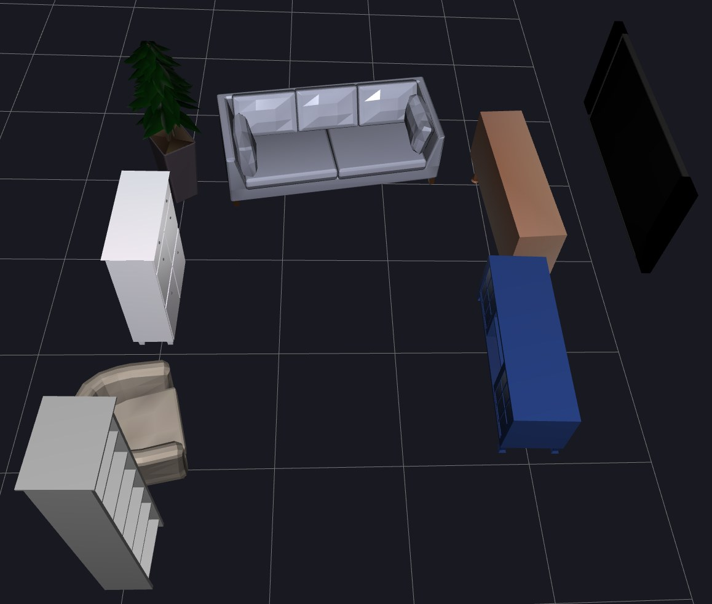
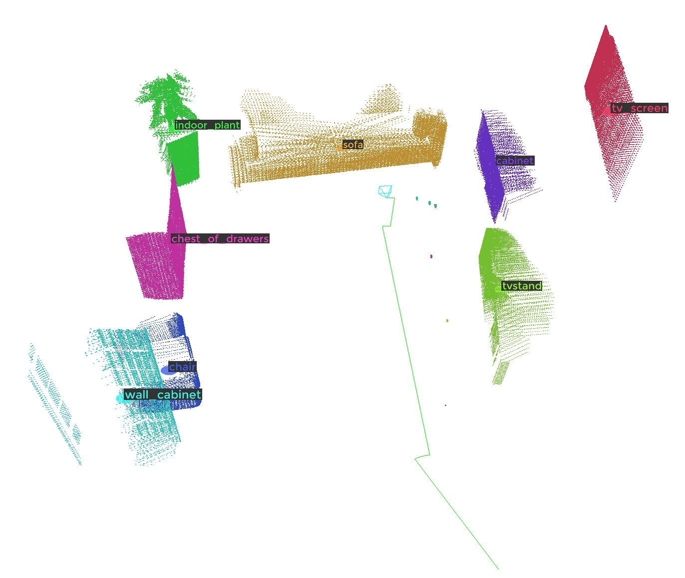
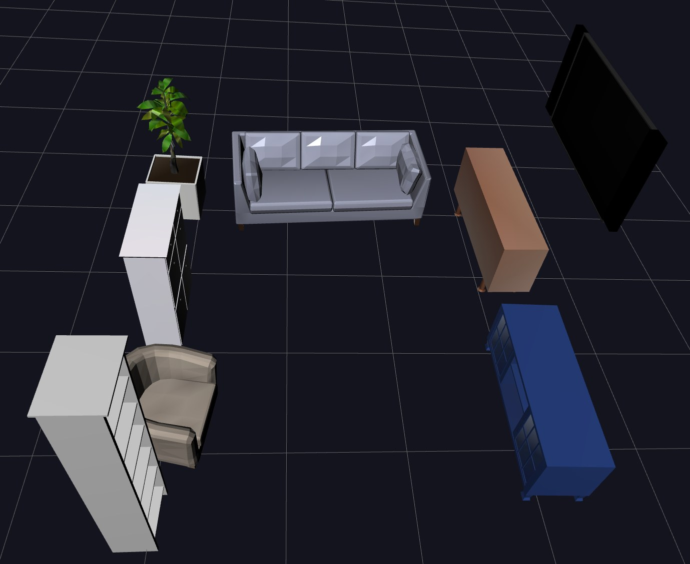

Motivation

TeleScene in one picture. Conventional remote visualization streams dense video, which costs a lot of bandwidth and adds communication latency. TeleScene streams a lightweight JSON 3D scene graph instead, and the local side synthesizes and updates the 3D scene from it.
Method Overview

System overview. On the remote side, RGB-D observations and camera poses are encoded into lightweight 3D scene graphs. Only the changed part of the graph is streamed as JSON over Fast DDS. On the local side, an immersive 3D scene is synthesized and updated incrementally from the streamed graph.
Qualitative Results
Scenes from unseen rooms in the test set. The remote side only sees partial point clouds. The local side retrieves complete assets and infers plausible poses, even for objects that were barely observed (blue boxes).



Quantitative Results
Shape Evaluation (Synthesized 3D scenes vs ground truth 3D scenes)
| Threshold | Observation | Layout | Shape | |||
|---|---|---|---|---|---|---|
| Position (m) ↓ | Yaw (°) ↓ | Chamfer Distance ↓ | F-score @ 0.1 ↑ | VoxIoU ↑ | ||
| 0.7 | High coverage | 0.1156 | 8.64 | 0.0660 | 0.9477 | 0.9467 |
| Low coverage | 0.2183 | 15.04 | 0.1266 | 0.9190 | 0.9201 | |
| 0.8 | High coverage | 0.1215 | 8.03 | 0.0671 | 0.9372 | 0.9358 |
| Low coverage | 0.2144 | 14.88 | 0.1241 | 0.9211 | 0.9221 | |
| 0.9 | High coverage | 0.1172 | 8.14 | 0.0814 | 0.8901 | 0.8876 |
| Low coverage | 0.2122 | 14.69 | 0.1212 | 0.9241 | 0.9252 | |
| 1.0 | High coverage | 0.1403 | 1.11 | 0.0715 | 0.9261 | 0.9251 |
| Low coverage | 0.2093 | 14.73 | 0.1204 | 0.9224 | 0.9233 | |
| Mean | High coverage | 0.1237 | 6.48 | 0.0715 | 0.9253 | 0.9238 |
| Low coverage | 0.2136 | 14.84 | 0.1231 | 0.9217 | 0.9227 | |
| Overall | — | 0.2075 | 14.37 | 0.1192 | 0.9224 | 0.9233 |
When most of an object is visible, its predicted center position, dimensions, and shape tend to be more accurate.
Bandwidth & latency Evaluation (graph streaming vs. image streaming)
Poor network conditions
| Hotspot distance (m) | Method | End-to-end latency (ms) | Communication latency (ms) | ||||
|---|---|---|---|---|---|---|---|
| Min | Max | Avg | Min | Max | Avg | ||
| 11.87 | Image streaming | 443.02 | 966.27 | 696.53 | 440.70 | 927.70 | 687.03 |
| 3D scene graph streaming (Ours) | 80.12 | 167.73 | 92.81 | 2.47 | 90.08 | 15.16 | |
| 12.81 | Image streaming | 1058.24 | 1649.31 | 1444.75 | 905.70 | 1622.35 | 1435.25 |
| 3D scene graph streaming (Ours) | 79.36 | 197.56 | 107.72 | 1.71 | 119.91 | 30.07 | |
The baseline streams 640×480 H.264 video over RTP. End-to-end latency for TeleScene includes scene graph generation, transmission, 3D scene synthesis and rendering. Comparison of end-to-end latency and communication latency at two hotspot distances (cross three and four intervening walls, respectively) under network-constrained conditions .
High-quality network conditions
TeleScene Dataset
There was no public dataset for this task, so we built one in AI Habitat (ReplicaCAD) for training the networks. Validation and test sequences come from rooms that are never seen in training.
Each sequence includes RGB, depth, semantic segmentation, camera trajectory, per-frame 2D scene graphs, accumulated 3D scene graphs, ground-truth 3D scenes with object assets, and OpenShape shape embeddings.
BibTeX
@article{gao2026telescene,
title = {TeleScene: Scene Graph Streaming for Incremental Remote 3D Scene Visualization},
author = {Gao, Penggang and Carega, Marco and Caldwell, Darwin G. and
Tefera, Yonas Teodros and Deshpande, Nikhil},
journal = {IEEE Transactions on Circuits and Systems for Video Technology},
year = {2026},
note = {Under review}
}